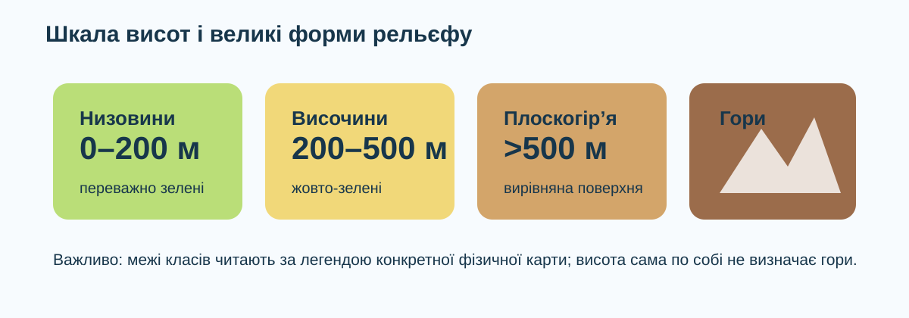

Рельєф
Сукупність нерівностей земної поверхні різного масштабу й походження.
Як за фізичною картою відрізнити низовину, височину, плоскогір’я і гори — і довести свій висновок даними, а не кольором «на око»?

Навчитися читати форму рельєфу за висотою, характером поверхні та картою.
Що важливіше для поділу великих форм рельєфу?


Вкажіть тип для кожної абсолютної висоти.
На фізичній карті зелені відтінки часто відповідають нижчим висотам, жовті — вищим рівнинам, коричневі — горам. Але точне значення завжди читаємо за легендою.

Віднесіть об’єкти до форми рельєфу. Саме ці об’єкти передбачені КТП.
Натискайте об’єкти: спочатку визначте самі, потім перевірте підказку.
Еверест — найвища вершина над рівнем моря. Мауна-Кеа, якщо рахувати від підніжжя на океанічному дні до вершини, має більшу повну висоту. Яке твердження коректне?
Під час перегляду випишіть дві ознаки, за якими відрізняють рівнини від гір.
Після спостережень формулюємо правила.
Сукупність нерівностей земної поверхні різного масштабу й походження.
Великі ділянки з невеликими відносними перепадами висот.
Низовини — переважно до 200 м; височини — 200–500 м; плоскогір’я — переважно понад 500 м із відносно вирівняною поверхнею.
Ділянки з великими абсолютними й відносними висотами та значною розчленованістю.
Учень побачив на карті територію на висоті 650–800 м і заявив: «Це точно гори, бо високо». Оцініть міркування.
Питання: як довести за фізичною картою, що територія належить до певної форми рельєфу?
§20. На фізичній карті знайдіть і покажіть: Гімалаї, Карпати, Кримські гори, Амазонську низовину, Східно-Європейську рівнину, Бразильське плоскогір’я, Придніпровську височину та Придніпровську низовину. Для трьох об’єктів запишіть форму рельєфу й один картографічний доказ.
Відкривається лише після введення даних учня.